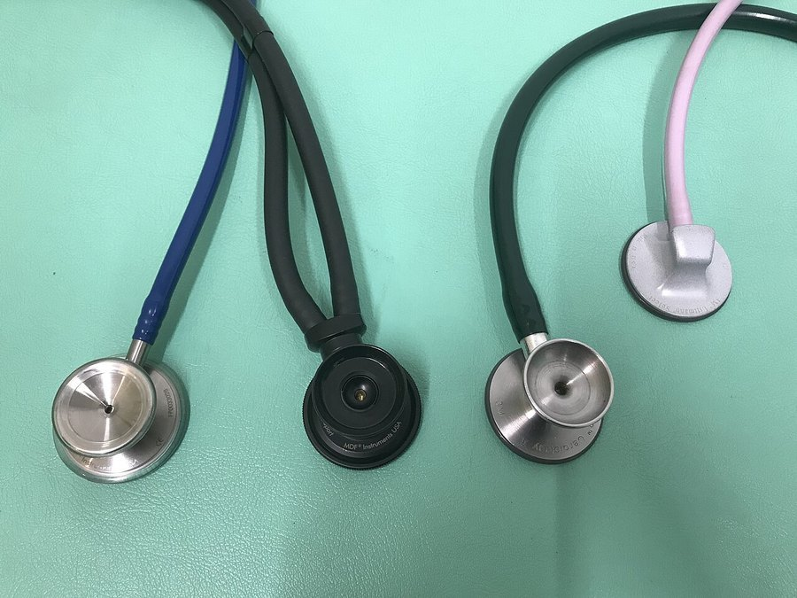

Men's Health Checkups by Age: What to Ask For
Most men see a doctor only when something hurts, which means plenty of routine screenings quietly get skipped. Here's a decade-by-decade guide to what's actually worth asking for.

Key takeaways
- Men's health checkups by age follow a clear pattern: blood pressure and cholesterol start young, cancer screenings cluster around 45 to 50.
- A yearly physical becomes the norm after 50, up from every three to five years in earlier decades.
- Prostate cancer screening is a genuine shared decision, not a one-size-fits-all test.
- Colorectal screening now starts at 45 for average-risk adults, earlier than many people assume.
- Testosterone testing is for symptoms, not routine screening, despite how it's often marketed.
Men's health checkups by age generally follow a predictable arc: blood pressure and cholesterol checks start in your 20s, diabetes and colorectal screening join in your 30s and 40s, and prostate, lung and bone health conversations become relevant from 50 onward. The exact timing shifts with personal risk factors and family history, so these are starting points for a conversation with your doctor, not fixed rules.
Here's what to actually ask for, decade by decade, and why men tend to skip more of this than they realize.
What should men in their 20s focus on?
This decade is mostly about building baseline habits and establishing a relationship with a primary care doctor, not chasing a long list of tests. Blood pressure checks at routine visits, a cholesterol screening starting around 18, and knowing your family's health history, heart disease, cancer, diabetes, matter more here than specialized testing. Sexually transmitted infection testing based on actual risk and sexual activity also belongs in this decade.
What changes in your 30s?
| Screening | Typical starting point |
|---|---|
| Blood pressure | Ongoing from 20s, checked at most visits |
| Cholesterol | Every 5 years from 18, more often with risk factors |
| Diabetes screening | Around age 30 for most adults, per HealthPartners guidance |
| Dental and eye exams | Every 1 to 2 years, ongoing |
| Skin checks | As needed, sooner with family history of skin cancer |
Thirty is also when more men start noticing early signals worth tracking, like changes in energy or recovery from workouts, which ties into what we cover in testosterone levels by age.
What's new for men in their 40s?
Colorectal cancer screening is the headline addition. Current guidance points to age 45 for average-risk adults, a few years earlier than many people assume, with an earlier start recommended for anyone with a close relative who had colorectal cancer. Cholesterol and blood pressure checks continue, and this decade is a reasonable time to ask about diabetes risk again if weight or family history has shifted. Belly fat and metabolic changes often become more noticeable here too, something our piece on belly fat in men over 40 digs into separately.
What should men in their 50s add to the list?
Fifty is when the pace of checkups genuinely picks up. Mayo Clinic Health System suggests a yearly physical exam after 50, compared with every three to five years before that. Prostate cancer screening conversations typically start here for average-risk men, earlier for Black men or those with a family history of the disease, framed explicitly as a shared decision given real disagreement among experts about who benefits most. Lung cancer screening with low-dose CT becomes relevant specifically for adults aged 50 to 80 with a significant smoking history. This is also a sensible decade to bring up hearing, since it declines gradually enough that most men underestimate how much they've lost, and to ask whether a baseline colonoscopy from your 40s needs repeating on schedule rather than assuming "clear once" means "clear forever."
Is prostate cancer screening worth getting?
It depends on your personal risk and how you weigh the tradeoffs, which is exactly why it's framed as a shared decision rather than a routine test everyone gets. Screening can catch cancer early, but it can also detect slow-growing cases that would never have caused problems, leading to treatment with real side effects for a cancer that didn't need treating. Talking through your specific risk factors, family history, race, and personal preferences with your doctor is a better approach than defaulting to yes or no based on age alone. Related prostate symptoms are covered separately in enlarged prostate symptoms.
Does testosterone need routine testing?
Not as a blanket screening test for men without symptoms. Testosterone naturally declines gradually with age, and a low number on a lab report doesn't automatically mean treatment is warranted or even useful. Testing makes more sense when there are actual symptoms: persistent fatigue, low libido, unexplained muscle loss, or mood changes that a doctor wants to investigate. Heavy marketing around "low T" has pushed some men toward unnecessary testing and treatment, so symptom-driven testing with a doctor is the more reasonable path.
What matters most in your 60s and beyond?
Bone density awareness becomes relevant, since men do develop osteoporosis, just later and less-screened than women typically are. Continued cardiovascular monitoring, prostate follow-up if already established as part of your care, and vision and hearing checks all matter more here. Vaccines, shingles and pneumonia in particular, become part of a well-rounded checkup. Strength and mobility also deserve real attention in this decade, which our guide to strength training after 50 for men covers from a different angle. A cognitive baseline is worth a mention too. Doctors don't typically run a formal memory test on every older patient by default, but flagging real changes in recall or focus early, rather than waiting years, gives you and your doctor more options for figuring out the cause.
What are the easiest screenings men actually skip?
- Colorectal screening, often delayed well past the recommended starting age.
- Cholesterol checks, especially for men who feel physically fine.
- Any screening framed around mental health or sleep, which men bring up far less than physical symptoms.
- Follow-up on a borderline result from a previous test, assuming "borderline" means "fine."
Zinc and other micronutrients sometimes get attention in men's health marketing, which our piece on zinc for men looks at with an evidence-based lens rather than a supplement-shelf one. None of these replace an actual physical exam or lab work, since deficiency or excess is something a blood test confirms, not a guess.
When should you see a doctor outside of scheduled checkups?
Any new or worsening symptom, unexplained weight loss, chest pain, blood in urine or stool, persistent fatigue, or changes in urination deserves a visit regardless of where you are in the screening calendar above. Checkup schedules are built around catching problems in people without symptoms. Once a symptom shows up, it overrides the calendar, and waiting for your "next scheduled visit" is the wrong call. The same goes for mood. Irritability, flat affect, or losing interest in things you normally enjoy are health signals, not just a rough patch, and men bring these up to a doctor far less often than physical complaints, even when they've noticed the change themselves.
Frequently asked questions
How often should men get a physical exam?
Mayo Clinic Health System suggests every three to five years for men under 50 with no major risk factors, shifting to a yearly physical after 50. Anyone with a chronic condition or new symptoms should see a doctor sooner, regardless of age.
At what age should men start cholesterol screening?
Around age 18 for men at average risk, repeated roughly every five years, according to Mayo Clinic Health System. Men with risk factors like obesity, diabetes or a family history of early heart disease often need more frequent checks starting earlier.
When should men be screened for prostate cancer?
Many organizations suggest starting the conversation around age 50 for average-risk men, earlier for Black men or those with a family history of prostate cancer. Because screening is genuinely debated among experts, the right move is a shared decision with your doctor about the benefits and downsides of testing for you specifically.
When should men start colorectal cancer screening?
Current guidance points to age 45 for average-risk adults, with earlier screening recommended for anyone with a close relative who had colorectal cancer or certain inflammatory bowel conditions. Options range from a colonoscopy to stool-based tests, and your doctor can help pick the right one for your risk level.
What screenings matter most for men in their 20s and 30s?
Blood pressure checks, cholesterol screening starting around 18, a baseline understanding of family health history, and sexually transmitted infection testing based on risk are the main priorities. This is also a good decade to establish a relationship with a primary care doctor rather than only showing up for acute problems.
Does testosterone need to be checked routinely?
Not as a routine screening test in men without symptoms. Testing makes more sense when a man has specific symptoms like persistent fatigue, low libido or unexplained muscle loss, since testosterone naturally declines gradually with age and a number alone doesn't automatically mean treatment is needed.
What should men in their 60s and beyond focus on?
Bone density awareness, continued cardiovascular screening, prostate monitoring if already established, vision and hearing checks, and vaccines like shingles and pneumonia become more relevant. This is also the decade when discussing fall risk and mobility with a doctor starts to matter more directly.
Related: Testosterone levels by age · Enlarged prostate symptoms · Zinc for men · Strength training after 50 for men
Image: melvil / Wikimedia Commons / CC BY-SA 4.0